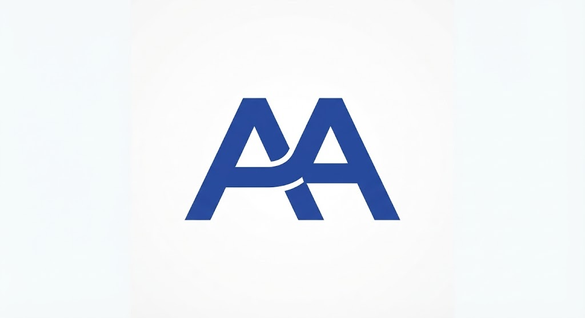

Ubicacion
Rua cariler 33, DAW. Excelente accesibilidad mediante transporte público y accesos adaptados.

IES Tetuán de las Victorias · DAW
Durante mi formación en el IES Tetuán de las Victorias, he desarrollado habilidades clave en programación, gestión de bases de datos y maquetación web. Me motiva el mundo de la programación y la maquetación web. El centro de las Victorias es realmente un referente. La misión educativa nos brinda un entorno de aprendizaje práctico orientado a proyectos reales.

Rua cariler 33, DAW. Excelente accesibilidad mediante transporte público y accesos adaptados.

Aulas de informática equipadas con hardware actualizado, entornos de red dedicados y software específico para desarrollo web y bases de datos.
Bolsa de empleo para alumnos, Aula de Emprendimiento, gestión de prácticas en empresas (FCT) y departamento de orientación académica.